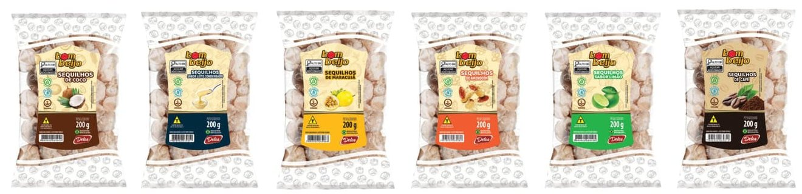
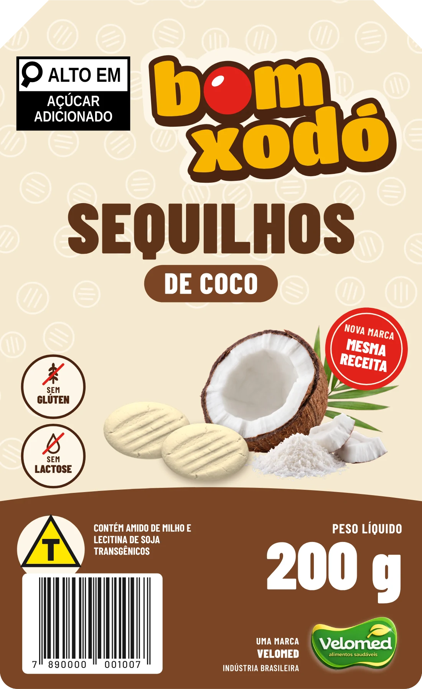
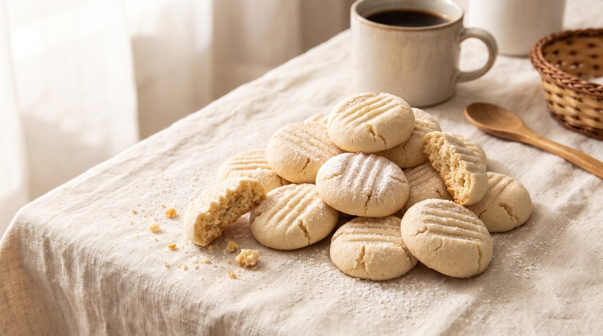

<title>Rotas Sequilhos Velomed</title>
<meta name="claude:viewport-fit-sides" content="cover">
<meta name="description" content="Proposta de marca para os sequilhos sem glúten e sem lactose da Velomed: estudo, três nomes, rótulos prontos para a gráfica e visualização 3D.">
<meta property="og:title" content="Sequilhos Bom Xodó · proposta de marca Velomed">
<meta property="og:description" content="O sequilho que o cliente já conhece, com nome novo e a mesma receita. Gire o pacote em 3D, veja os 6 sabores e a ficha para a gráfica.">
<meta property="og:image" content="img/og.jpg">
<meta property="og:type" content="website">
<link rel="preconnect" href="https://fonts.googleapis.com">
<link rel="preconnect" href="https://fonts.gstatic.com" crossorigin>
<link rel="stylesheet" href="https://fonts.googleapis.com/css2?family=Barlow+Condensed:wght@500;600;700;800&family=Barlow:wght@400;500;600;700&family=Titan+One&display=swap">
<style>
/* Layout: palco escuro de estúdio (muda com o sabor) e, abaixo, o caderno da proposta em papel creme, coluna de leitura com tabelas largas roláveis. */
:root {
  --cacau: #4A2412;      /* marrom da logo */
  --chocolate: #24130A;  /* palco */
  --mel: #F7B500;        /* amarelo da logo */
  --beijo: #E2231A;      /* bolinha vermelha */
  --creme: #F6E9CF;      /* fundo do rótulo */
  --papel: #FCF6E8;
  --tinta: #2B1A10;
  --tinta-2: #6A4E3B;
  --linha: rgba(74, 36, 18, 0.16);
  --ok: #2F7D32;
  --pendente: #B4570A;
  --palco: #3a2112;
  --f-display: 'Titan One', 'Arial Rounded MT Bold', 'Trebuchet MS', sans-serif;
  --f-rotulo: 'Barlow Condensed', 'Arial Narrow', 'Roboto Condensed', sans-serif;
  --f-texto: 'Barlow', 'Segoe UI', 'Helvetica Neue', Arial, sans-serif;
  color-scheme: light;
}
* { box-sizing: border-box; }
[hidden] { display: none !important; }
html { scroll-behavior: smooth; }
body { margin: 0; background: var(--papel); color: var(--tinta); font: 400 17px/1.55 var(--f-texto); -webkit-font-smoothing: antialiased; }
body::before { content: ""; position: fixed; inset: 0 0 auto; height: env(safe-area-inset-top, 0px); z-index: 10; background: var(--chocolate); }
img { max-width: 100%; display: block; }
a { color: var(--cacau); text-underline-offset: 3px; }
:focus-visible { outline: 3px solid var(--mel); outline-offset: 2px; border-radius: 4px; }
.gutter { padding-left: max(16px, env(safe-area-inset-left, 0px)); padding-right: max(16px, env(safe-area-inset-right, 0px)); }
.wrap { max-width: 1160px; margin: 0 auto; }
.eyebrow { font: 700 13px/1.2 var(--f-rotulo); letter-spacing: 0.14em; text-transform: uppercase; color: var(--tinta-2); }
h2 { font: 400 clamp(30px, 4.4vw, 46px)/1.05 var(--f-display); color: var(--cacau); margin: 6px 0 14px; text-wrap: balance; letter-spacing: 0.005em; }
h3 { font: 800 21px/1.2 var(--f-rotulo); text-transform: uppercase; letter-spacing: 0.04em; margin: 0 0 8px; color: var(--tinta); }
p { margin: 0 0 12px; max-width: 66ch; }
.lead { font-size: 19px; color: var(--tinta-2); }
section.bloco { padding-block: clamp(56px, 8vw, 96px); border-top: 1px solid var(--linha); }
.num { font-variant-numeric: tabular-nums; }

/* ---------------- palco 3D */
.palco { position: relative; background: var(--palco); color: #fff8ec; transition: background-color 700ms ease; overflow: hidden; }
.palco::before { content: ""; position: absolute; inset: 0; background: radial-gradient(60% 70% at 62% 46%, rgba(255, 236, 200, 0.24), transparent 62%), radial-gradient(120% 90% at 50% 120%, rgba(0, 0, 0, 0.55), transparent 60%); pointer-events: none; }
.palco-grade { position: relative; display: grid; grid-template-columns: minmax(280px, 400px) 1fr; grid-template-rows: auto 1fr; grid-template-areas: "texto cena" "ctl cena"; min-height: clamp(560px, 84vh, 860px); }
.palco-texto { grid-area: texto; position: relative; z-index: 2; padding-block: clamp(28px, 5vw, 64px) 22px; display: flex; flex-direction: column; gap: 18px; min-width: 0; }
.controles { grid-area: ctl; position: relative; z-index: 2; align-self: start; padding-bottom: 40px; min-width: 0; }
.cena { grid-area: cena; }
.palco-texto .eyebrow { color: rgba(255, 248, 236, 0.72); }
.marca-hero { width: min(300px, 78%); filter: drop-shadow(0 10px 22px rgba(0, 0, 0, 0.35)); transform: rotate(-2deg); }
.palco-texto .lead { color: rgba(255, 248, 236, 0.86); font-size: 18px; max-width: 34ch; }
.cena { position: relative; min-width: 0; }
.cena canvas { position: absolute; inset: 0; width: 100%; height: 100%; display: block; cursor: grab; touch-action: none; }
.cena canvas:active { cursor: grabbing; }
.dica { position: absolute; right: 18px; bottom: 16px; z-index: 2; font: 600 13px var(--f-rotulo); letter-spacing: 0.08em; text-transform: uppercase; color: rgba(255, 248, 236, 0.66); display: flex; align-items: center; gap: 8px; pointer-events: none; }
.dica svg { width: 22px; height: 22px; }
.carregando { position: absolute; inset: 0; display: grid; place-items: center; font: 600 15px var(--f-rotulo); letter-spacing: 0.1em; text-transform: uppercase; color: rgba(255, 248, 236, 0.7); }
.controles { display: grid; gap: 14px; }
.grupo-rotulo { font: 700 12px var(--f-rotulo); letter-spacing: 0.14em; text-transform: uppercase; color: rgba(255, 248, 236, 0.62); margin-bottom: 7px; }
.chips { display: flex; flex-wrap: wrap; gap: 8px; }
.chip { appearance: none; border: 1.5px solid rgba(255, 248, 236, 0.28); background: rgba(255, 248, 236, 0.06); color: #fff8ec; border-radius: 999px; padding: 7px 13px 7px 9px; font: 700 14px var(--f-rotulo); letter-spacing: 0.05em; text-transform: uppercase; display: inline-flex; align-items: center; gap: 7px; cursor: pointer; min-height: 38px; transition: background 160ms, border-color 160ms; }
.chip i { width: 14px; height: 14px; border-radius: 50%; background: var(--c); box-shadow: 0 0 0 2px rgba(255, 255, 255, 0.85); }
.chip:hover { border-color: rgba(255, 248, 236, 0.6); }
.chip[aria-pressed="true"] { background: #fff8ec; color: var(--tinta); border-color: #fff8ec; }
.seg { display: inline-flex; flex-wrap: wrap; background: rgba(0, 0, 0, 0.28); border-radius: 12px; padding: 4px; gap: 4px; }
.seg button { appearance: none; border: 0; background: transparent; color: #fff8ec; padding: 8px 12px; border-radius: 9px; font: 700 15px var(--f-rotulo); letter-spacing: 0.04em; cursor: pointer; min-height: 38px; }
.seg button small { font: 600 10px var(--f-rotulo); letter-spacing: 0.12em; display: block; color: var(--mel); text-transform: uppercase; }
.seg button[aria-pressed="true"] { background: var(--mel); color: var(--tinta); }
.seg button[aria-pressed="true"] small { color: var(--cacau); }
.acoes { display: flex; flex-wrap: wrap; gap: 8px; }
.btn { appearance: none; border: 1.5px solid rgba(255, 248, 236, 0.4); background: transparent; color: #fff8ec; border-radius: 10px; padding: 9px 14px; font: 700 14px var(--f-rotulo); letter-spacing: 0.06em; text-transform: uppercase; cursor: pointer; min-height: 40px; display: inline-flex; gap: 8px; align-items: center; }
.btn:hover { background: rgba(255, 248, 236, 0.1); }
.btn[aria-pressed="true"] { background: rgba(255, 248, 236, 0.16); border-color: #fff8ec; }
.btn svg { width: 16px; height: 16px; }
.selo-rec { display: inline-block; background: var(--beijo); color: #fff; font: 700 11px var(--f-rotulo); letter-spacing: 0.12em; text-transform: uppercase; padding: 3px 8px; border-radius: 999px; }

/* ---------------- estudo */
.duas { display: grid; grid-template-columns: 1.05fr 1fr; gap: clamp(24px, 4vw, 56px); align-items: start; }
.duas > * { min-width: 0; }
.hoje { border-radius: 14px; overflow: hidden; border: 1px solid var(--linha); background: #fff; }
.hoje figcaption { font: 500 13px/1.4 var(--f-texto); color: var(--tinta-2); padding: 10px 14px; border-top: 1px solid var(--linha); }
.tabela-rolagem { overflow-x: auto; -webkit-overflow-scrolling: touch; border: 1px solid var(--linha); border-radius: 12px; background: #fff; }
table { border-collapse: collapse; width: 100%; font-size: 15px; }
th, td { text-align: left; padding: 11px 14px; border-bottom: 1px solid var(--linha); vertical-align: top; }
th { font: 700 13px var(--f-rotulo); letter-spacing: 0.1em; text-transform: uppercase; color: var(--tinta-2); background: var(--creme); }
tr:last-child td { border-bottom: 0; }
td strong { font-weight: 700; }
.peso { display: inline-flex; gap: 3px; vertical-align: middle; }
.peso b { width: 10px; height: 10px; border-radius: 2px; background: var(--linha); }
.peso b.on { background: var(--cacau); }

/* ---------------- rotas */
.rotas { display: grid; grid-template-columns: repeat(3, minmax(0, 1fr)); gap: 18px; margin-top: 28px; }
.rota { background: #fff; border: 1px solid var(--linha); border-radius: 16px; padding: 22px; display: flex; flex-direction: column; gap: 12px; position: relative; }
.rota.rec { border: 2px solid var(--cacau); box-shadow: 0 14px 30px -18px rgba(74, 36, 18, 0.55); }
.rota .logo-box { background: var(--creme); border-radius: 12px; aspect-ratio: 16 / 10; display: grid; place-items: center; padding: 18px; max-width: 100%; }
.rota .logo-box img { max-height: 100%; width: auto; max-width: 92%; }
.rota .rec-tag { position: absolute; top: -12px; left: 20px; }
.medidor { display: grid; grid-template-columns: auto 1fr; gap: 6px 12px; align-items: center; font: 600 14px var(--f-rotulo); letter-spacing: 0.04em; text-transform: uppercase; color: var(--tinta-2); }
.barra { height: 8px; background: var(--linha); border-radius: 99px; overflow: hidden; }
.barra span { display: block; height: 100%; background: var(--cacau); border-radius: 99px; }
.barra.risco span { background: var(--pendente); }
.rota ul { margin: 0; padding-left: 18px; font-size: 15px; }
.rota li { margin-bottom: 4px; }

/* ---------------- sistema visual */
.paleta { display: grid; grid-template-columns: repeat(auto-fill, minmax(150px, 1fr)); gap: 12px; margin: 18px 0 30px; }
.cor { border: 1px solid var(--linha); border-radius: 12px; overflow: hidden; background: #fff; }
.cor i { display: block; height: 64px; background: var(--c); }
.cor div { padding: 9px 11px; font-size: 13px; line-height: 1.35; }
.cor b { font: 700 14px var(--f-rotulo); letter-spacing: 0.04em; text-transform: uppercase; display: block; }
.cor code { font: 500 12px ui-monospace, 'SF Mono', Menlo, Consolas, monospace; color: var(--tinta-2); }
.tipos { display: grid; grid-template-columns: repeat(3, minmax(0, 1fr)); gap: 14px; }
.tipo { border: 1px solid var(--linha); border-radius: 12px; padding: 16px; background: #fff; min-width: 0; }
.tipo .am { font-size: 34px; line-height: 1.1; color: var(--cacau); margin: 6px 0; overflow-wrap: anywhere; }
.anatomia { display: grid; grid-template-columns: minmax(0, 340px) 1fr; gap: clamp(20px, 4vw, 48px); align-items: start; margin-top: 34px; }
.anatomia figure { position: relative; margin: 0; }
.anatomia figure img { filter: drop-shadow(0 16px 24px rgba(74, 36, 18, 0.25)); }
.pino { position: absolute; width: 26px; height: 26px; margin: -13px 0 0 -13px; border-radius: 50%; background: var(--beijo); color: #fff; font: 700 14px/26px var(--f-rotulo); text-align: center; box-shadow: 0 0 0 3px #fff; }
.legenda { list-style: none; margin: 0; padding: 0; display: grid; gap: 10px; counter-reset: l; }
.legenda li { display: grid; grid-template-columns: 26px 1fr; gap: 12px; font-size: 15px; }
.legenda li::before { counter-increment: l; content: counter(l); width: 26px; height: 26px; border-radius: 50%; background: var(--beijo); color: #fff; font: 700 14px/26px var(--f-rotulo); text-align: center; }

/* ---------------- rótulos */
.abas { display: inline-flex; gap: 4px; background: var(--creme); border-radius: 12px; padding: 4px; margin: 6px 0 22px; flex-wrap: wrap; }
.abas button { appearance: none; border: 0; background: transparent; padding: 9px 14px; border-radius: 9px; font: 700 15px var(--f-rotulo); letter-spacing: 0.05em; text-transform: uppercase; color: var(--tinta-2); cursor: pointer; min-height: 40px; }
.abas button[aria-pressed="true"] { background: #fff; color: var(--tinta); box-shadow: 0 1px 3px rgba(74, 36, 18, 0.2); }
.galeria { display: grid; grid-template-columns: repeat(6, minmax(0, 1fr)); gap: 14px; }
.galeria figure { margin: 0; min-width: 0; }
.galeria img { width: 100%; height: auto; filter: drop-shadow(0 10px 16px rgba(74, 36, 18, 0.22)); }
.galeria figcaption { font: 700 14px var(--f-rotulo); letter-spacing: 0.06em; text-transform: uppercase; margin-top: 10px; display: flex; align-items: center; gap: 7px; }
.galeria figcaption i { width: 11px; height: 11px; border-radius: 50%; background: var(--c); }

/* ---------------- gráfica */
.spec td:first-child { font: 700 14px var(--f-rotulo); letter-spacing: 0.06em; text-transform: uppercase; color: var(--tinta-2); white-space: nowrap; }
.downloads { display: grid; grid-template-columns: repeat(3, minmax(0, 1fr)); gap: 10px; margin: 16px 0 8px; }
.dl { display: flex; align-items: center; gap: 10px; padding: 11px 13px; border: 1px solid var(--linha); border-radius: 10px; background: #fff; text-decoration: none; color: var(--tinta); font: 600 15px var(--f-rotulo); letter-spacing: 0.03em; min-width: 0; }
.dl:hover { border-color: var(--cacau); }
.dl i { width: 12px; height: 12px; border-radius: 50%; background: var(--c); flex: none; }
.dl span { flex: 1; min-width: 0; }
.dl small { font: 600 12px var(--f-rotulo); color: var(--tinta-2); letter-spacing: 0.06em; }
.status { display: inline-block; font: 700 12px var(--f-rotulo); letter-spacing: 0.08em; text-transform: uppercase; padding: 3px 9px; border-radius: 999px; white-space: nowrap; }
.status.ok { background: #E3F1E1; color: var(--ok); }
.status.pend { background: #FBE9D7; color: var(--pendente); }
.aviso { border-left: 4px solid var(--pendente); background: #FFF4E6; padding: 14px 18px; border-radius: 0 10px 10px 0; margin: 20px 0; font-size: 16px; max-width: 80ch; }

/* ---------------- transição */
.foto-mesa { border-radius: 16px; overflow: hidden; aspect-ratio: 16 / 9; max-width: 100%; }
.foto-mesa img { width: 100%; height: 100%; object-fit: cover; }
.passos { list-style: none; padding: 0; margin: 0; display: grid; gap: 14px; counter-reset: p; }
.passos li { display: grid; grid-template-columns: 44px 1fr; gap: 14px; align-items: start; }
.passos li::before { counter-increment: p; content: counter(p); font: 400 26px/44px var(--f-display); color: var(--mel); background: var(--cacau); width: 44px; height: 44px; border-radius: 50%; text-align: center; }
.passos b { font: 800 18px var(--f-rotulo); text-transform: uppercase; letter-spacing: 0.04em; display: block; }
.pend-lista { columns: 2 320px; column-gap: 32px; padding-left: 20px; margin: 0; }
.pend-lista li { break-inside: avoid; margin-bottom: 10px; }
footer { background: var(--chocolate); color: rgba(255, 248, 236, 0.75); padding-block: 36px; font-size: 14px; }
footer .wrap { display: flex; flex-wrap: wrap; gap: 12px 28px; justify-content: space-between; align-items: center; }

@media (max-width: 980px) {
  .palco-grade { grid-template-columns: 1fr; grid-template-rows: auto; grid-template-areas: "texto" "cena" "ctl"; min-height: 0; }
  .palco-texto { padding-bottom: 0; gap: 12px; }
  .marca-hero { width: min(220px, 60%); }
  .cena { height: clamp(400px, 62vh, 620px); }
  .controles { padding-top: 6px; }
  .duas, .anatomia { grid-template-columns: 1fr; }
  .rotas { grid-template-columns: 1fr; }
  .galeria { grid-template-columns: repeat(3, minmax(0, 1fr)); }
  .tipos { grid-template-columns: 1fr; }
  .downloads { grid-template-columns: repeat(2, minmax(0, 1fr)); }
}
@media (max-width: 560px) {
  body { font-size: 16px; }
  .galeria { grid-template-columns: repeat(2, minmax(0, 1fr)); }
  .downloads { grid-template-columns: 1fr; }
  .dica { display: none; }
}
@media (prefers-reduced-motion: reduce) { * { transition: none !important; } html { scroll-behavior: auto; } }
</style>

<header class="palco" id="palco" aria-label="Visualização 3D do pacote">
  <div class="palco-grade gutter wrap" style="max-width:1320px">
    <div class="palco-texto">
      <span class="eyebrow">Proposta de marca · Velomed + Delos · novembro de 2026</span>
      
      <p class="lead">O sequilho sem glúten e sem lactose que o cliente já procura na gôndola. Nome novo, mesma receita, mesma fábrica.</p>
    </div>
    <div class="controles" id="controles">
      <div>
        <div class="grupo-rotulo" id="lblSabor">Sabor</div>
        <div class="chips" id="chips" role="group" aria-labelledby="lblSabor"></div>
      </div>
      <div>
        <div class="grupo-rotulo" id="lblNome">Nome</div>
        <div class="seg" id="seg" role="group" aria-labelledby="lblNome"></div>
      </div>
      <div class="acoes">
        <button class="btn" id="btVerso" type="button"><svg viewBox="0 0 24 24" fill="none" stroke="currentColor" stroke-width="2"><path d="M3 12a9 9 0 0 1 15.5-6.2L21 8M21 3v5h-5M21 12a9 9 0 0 1-15.5 6.2L3 16M3 21v-5h5"/></svg>Ver o verso</button>
        <button class="btn" id="btLinha" type="button" aria-pressed="false"><svg viewBox="0 0 24 24" fill="none" stroke="currentColor" stroke-width="2"><rect x="2" y="6" width="5" height="12" rx="1"/><rect x="9.5" y="6" width="5" height="12" rx="1"/><rect x="17" y="6" width="5" height="12" rx="1"/></svg>Linha completa</button>
        <button class="btn" id="btGiro" type="button" aria-pressed="true"><svg viewBox="0 0 24 24" fill="currentColor"><rect x="6" y="5" width="4" height="14" rx="1"/><rect x="14" y="5" width="4" height="14" rx="1"/></svg><span>Pausar giro</span></button>
      </div>
    </div>
    <div class="cena" id="cena">
      <canvas id="tela" aria-label="Pacote de sequilhos em 3D. Arraste para girar 360 graus."></canvas>
      <div class="carregando" id="carregando">Abrindo o pacote…</div>
      <div class="dica"><svg viewBox="0 0 24 24" fill="none" stroke="currentColor" stroke-width="1.8"><path d="M12 3c-4 0-7 1.3-7 3s3 3 7 3 7-1.3 7-3-3-3-7-3z"/><path d="M5 6v12c0 1.7 3 3 7 3s7-1.3 7-3V6"/><path d="M9 14l3 3 3-3"/></svg>Arraste para girar 360° · pinça ou rolagem aproxima</div>
    </div>
  </div>
</header>

<main>
  <section class="bloco gutter" id="estudo">
    <div class="wrap duas">
      <div>
        <span class="eyebrow">O ponto de partida</span>
        <h2>O cliente reconhece o pacote antes de ler o nome</h2>
        <p class="lead">O Bom Beijo é comprado por quem precisa de sem glúten e sem lactose e já sabe onde ele fica na prateleira. A troca de nome só funciona se tudo o que o olho procura continuar no lugar.</p>
        <p>Por isso a proposta mexe no que é obrigatório (o nome e o dono da marca) e preserva o resto: o mesmo saco transparente, a cor de cada sabor, o letreiro amarelo com contorno marrom, a bolinha vermelha, o creme do rótulo e a posição de cada informação.</p>
      </div>
      <figure class="hoje" style="margin:0">
        
        <figcaption>Hoje: Bom Beijo, Delos, 200 g, 6 sabores (fotos do catálogo da Velomed).</figcaption>
      </figure>
    </div>
    <div class="wrap" style="margin-top:34px">
      <h3>O que o cliente usa para achar o produto, e o que acontece com cada coisa</h3>
      <div class="tabela-rolagem">
        <table>
          <thead><tr><th>Sinal de reconhecimento</th><th>Peso na gôndola</th><th>No Bom Beijo</th><th>Na marca nova</th></tr></thead>
          <tbody>
            <tr><td><strong>Saco transparente com os sequilhos à mostra</strong></td><td><span class="peso"><b class="on"></b><b class="on"></b><b class="on"></b><b class="on"></b><b class="on"></b></span></td><td>Estampa branca de sequilhos em traço no topo e na base</td><td>Igual. O saco é o mesmo da fábrica</td></tr>
            <tr><td><strong>Cor da faixa por sabor</strong></td><td><span class="peso"><b class="on"></b><b class="on"></b><b class="on"></b><b class="on"></b><b class="on"></b></span></td><td>Marrom coco, azul leite condensado, amarelo maracujá, laranja amendoim, verde limão, café escuro</td><td>Mesmo código de cores, ajustado para CMYK</td></tr>
            <tr><td><strong>Letreiro amarelo com contorno marrom</strong></td><td><span class="peso"><b class="on"></b><b class="on"></b><b class="on"></b><b class="on"></b><b></b></span></td><td>Letra redonda e pesada, em duas linhas, levemente inclinada</td><td>Mesma família visual, desenhada do zero (Titan One redesenhada com volume)</td></tr>
            <tr><td><strong>A bolinha vermelha no lugar do “o”</strong></td><td><span class="peso"><b class="on"></b><b class="on"></b><b class="on"></b><b class="on"></b><b></b></span></td><td>O “o” de “bom” é uma bola vermelha</td><td>Mantida como o “beijo” da marca, com brilho</td></tr>
            <tr><td><strong>Rótulo creme com cantos chanfrados</strong></td><td><span class="peso"><b class="on"></b><b class="on"></b><b class="on"></b><b></b><b></b></span></td><td>Creme com sequilhos em traço, ilustração do ingrediente</td><td>Mesmo formato e mesma ordem de leitura; ilustração nova com dois sequilhos</td></tr>
            <tr><td><strong>“SEQUILHOS” em letra grande</strong></td><td><span class="peso"><b class="on"></b><b class="on"></b><b class="on"></b><b></b><b></b></span></td><td>Condensada, na cor do sabor</td><td>Igual, maior e mais legível</td></tr>
            <tr><td><strong>Nome da marca</strong></td><td><span class="peso"><b class="on"></b><b class="on"></b><b></b><b></b><b></b></span></td><td>Bom Beijo</td><td>Troca obrigatória. Rota recomendada: Bom Xodó, que mantém o “bom” e o ritmo de três sílabas</td></tr>
          </tbody>
        </table>
      </div>
    </div>
  </section>

  <section class="bloco gutter" id="nomes" style="background:#fff">
    <div class="wrap">
      <span class="eyebrow">Três caminhos de nome</span>
      <h2>Um nome que soa como carinho, com a bolinha vermelha no centro</h2>
      <p class="lead">As três rotas usam o mesmo sistema visual e mudam só o grau de parentesco com o nome antigo. Quanto mais parecido, mais fácil para o cliente e mais importante a liberação por escrito da Delos e a busca no INPI.</p>
      <div class="rotas" id="rotas"></div>
      <p style="margin-top:22px;font-size:15px;color:var(--tinta-2)">Os três nomes precisam de busca de anterioridade no INPI (classe 30, biscoitos) antes da escolha final. A disponibilidade de registro não foi verificada nesta proposta.</p>
    </div>
  </section>

  <section class="bloco gutter" id="sistema">
    <div class="wrap">
      <span class="eyebrow">Sistema visual</span>
      <h2>Cores, letras e a anatomia do rótulo</h2>
      <h3>Cores da marca</h3>
      <div class="paleta" id="paletaMarca"></div>
      <h3>Uma cor por sabor (a mesma do Bom Beijo)</h3>
      <div class="paleta" id="paletaSabores"></div>
      <h3>Tipografia</h3>
      <div class="tipos">
        <div class="tipo"><span class="eyebrow">Letreiro da marca</span><div class="am" style="font-family:var(--f-display)">bom xodó</div><p style="font-size:14px;margin:0">Titan One, redesenhada em curvas com contorno, volume e a bolinha. Só no logotipo.</p></div>
        <div class="tipo"><span class="eyebrow">Títulos do rótulo</span><div class="am" style="font:800 34px/1.1 var(--f-rotulo);text-transform:uppercase">Sequilhos de coco</div><p style="font-size:14px;margin:0">Barlow Condensed Black e ExtraBold: denominação, sabor, peso.</p></div>
        <div class="tipo"><span class="eyebrow">Texto legal e tabela</span><div class="am" style="font:500 22px/1.3 Arial, var(--f-texto);color:var(--tinta)">Informação nutricional</div><p style="font-size:14px;margin:0">Barlow para ingredientes e origem; Arial (métrica) na tabela e Arial Narrow na lupa, como pede a IN 75/2020.</p></div>
      </div>
      <div class="anatomia">
        <figure>
          
          <span class="pino" style="left:23%;top:13%">1</span>
          <span class="pino" style="left:72%;top:9%">2</span>
          <span class="pino" style="left:50%;top:35%">3</span>
          <span class="pino" style="left:12%;top:58%">4</span>
          <span class="pino" style="left:87%;top:47%">5</span>
          <span class="pino" style="left:58%;top:58%">6</span>
          <span class="pino" style="left:12%;top:78%">7</span>
          <span class="pino" style="left:85%;top:79%">8</span>
          <span class="pino" style="left:20%;top:90%">9</span>
        </figure>
        <div>
          <h3>Anatomia do rótulo frontal (95 × 155 mm)</h3>
          <ol class="legenda">
            <li><span><strong>Lupa “alto em açúcar adicionado”</strong> na metade de cima do painel, preta no branco, Arial Narrow negrito a 9,5 pt, 25 × 16 mm (2,8% do painel; o mínimo é 2%).</span></li>
            <li><span><strong>Logotipo</strong> amarelo com contorno e volume marrons e a bolinha vermelha, inclinado 4°.</span></li>
            <li><span><strong>Denominação de venda</strong> “SEQUILHOS” + fita do sabor, na cor do sabor.</span></li>
            <li><span><strong>Selos “sem glúten” e “sem lactose”</strong> na metade de baixo, menores que a lupa (regra da RDC 429 para alegações).</span></li>
            <li><span><strong>Selo de transição “Nova marca, mesma receita”</strong>, só nos primeiros 6 meses.</span></li>
            <li><span><strong>Ilustração do sabor com dois sequilhos</strong>, 330 dpi, achatada em CMYK sobre o creme.</span></li>
            <li><span><strong>Símbolo T de transgênico</strong>, 12,5 mm de lado (0,47% do painel; o mínimo é 0,4%), com a área livre em volta e a frase “contém … transgênico”.</span></li>
            <li><span><strong>Peso líquido 200 g</strong> com algarismos de 10,5 mm (o Inmetro pede 3 mm) e endosso “Uma marca Velomed”.</span></li>
            <li><span><strong>Código de barras EAN-13</strong> a 80% (29,8 × 20,7 mm) sobre branco. O número sai do prefixo GS1 da Velomed.</span></li>
          </ol>
        </div>
      </div>
    </div>
  </section>

  <section class="bloco gutter" id="rotulos" style="background:#fff">
    <div class="wrap">
      <span class="eyebrow">Os rótulos</span>
      <h2>Seis sabores, frente e verso</h2>
      <div class="abas" role="group" aria-label="Escolha o lado do rótulo">
        <button type="button" id="abaFrente" aria-pressed="true">Frente</button>
        <button type="button" id="abaVerso" aria-pressed="false">Verso</button>
      </div>
      <div class="galeria" id="galeria"></div>
    </div>
  </section>

  <section class="bloco gutter" id="grafica">
    <div class="wrap">
      <span class="eyebrow">Para a gráfica</span>
      <h2>Ficha técnica de impressão</h2>
      <p class="lead">Arquivos em PDF vetorial, CMYK, com sangria, marcas de corte e faca em cor especial. Os textos estão em curvas e o PDF não carrega nenhuma fonte.</p>
      <div class="tabela-rolagem">
        <table class="spec">
          <tbody>
            <tr><td>Peças</td><td>2 rótulos adesivos por sabor: frente (painel principal) e verso (contrarrótulo). 6 sabores = 12 artes.</td></tr>
            <tr><td>Formato final (faca)</td><td class="num">Frente 95 × 155 mm, cantos de cima chanfrados a 11 mm e cantos de baixo com raio de 4 mm. Verso 95 × 155 mm, raio de 4 mm nos quatro cantos.</td></tr>
            <tr><td>Sangria</td><td class="num">3 mm em todos os lados (arquivo de 101 × 161 mm na área de sangria).</td></tr>
            <tr><td>Margem de segurança</td><td class="num">3 mm para dentro do corte. Nenhum texto ou elemento obrigatório fora dela.</td></tr>
            <tr><td>Faca</td><td>Linha de 0,25 pt em cor especial “FACA” (100% magenta de referência), em sobreimpressão. Não imprime.</td></tr>
            <tr><td>Cores</td><td>CMYK, sem RGB. Preto 100K nos textos legais, na lupa e na tabela. Amarelo do “T” em 100Y e preto em 100K, como pede a Portaria MJ 2.658/2003. Opcional: vermelho da bolinha em Pantone 485 C para mais brilho.</td></tr>
            <tr><td>Imagens</td><td class="num">Ilustrações a 330 dpi e logo da Velomed a 350 dpi, já em CMYK e achatadas sobre a cor de fundo (sem transparência). As ilustrações dos ingredientes foram geradas no Gemini e podem ser trocadas por fotografia de estúdio.</td></tr>
            <tr><td>Arquivo</td><td>PDF com TrimBox e BleedBox definidos, texto convertido em curvas e nenhuma fonte embutida. Perfil de conversão usado: CMYK genérico de impressão offset. A gráfica aplica o perfil dela no RIP (PDF/X-4).</td></tr>
            <tr><td>Material sugerido</td><td>BOPP branco ou perolizado adesivo (resiste a gordura e umidade) ou couché adesivo com laminação BOPP brilho. Adesivo permanente para filme de PP. Confirmar com a gráfica e com o fornecedor do saco.</td></tr>
            <tr><td>Acabamento</td><td>Verniz UV brilho total ou laminação brilho. Sem verniz sobre a área livre de lote e validade, para o jato de tinta secar.</td></tr>
            <tr><td>Bobina (rotuladora)</td><td>Definir com a Delos: diâmetro do tubete (normalmente 76 mm), sentido de saída e espaço entre etiquetas.</td></tr>
            <tr><td>Saco</td><td class="num">O 3D usa um saco de 17 × 27 cm com solda de 22 mm. Medir o saco atual da Delos antes de fechar a faca.</td></tr>
          </tbody>
        </table>
      </div>
      <h3 style="margin-top:30px">Arquivos de impressão · rota Bom Xodó</h3>
      <div class="downloads" id="downloads"></div>
      <div class="aviso"><strong>Prova para aprovação.</strong> Os campos em magenta (CNPJ, razão social, endereço da Delos, licença sanitária, EAN) e os dados de ingredientes e tabela precisam vir da Delos antes da impressão. No site da Delos, Amendoim, Café e Leite Condensado aparecem com a mesma tabela e a mesma lista de ingredientes, e a lista não cita amendoim nem café.</div>

      <h3 style="margin-top:34px">Conferência de rotulagem (Anvisa e Inmetro)</h3>
      <div class="tabela-rolagem">
        <table>
          <thead><tr><th>Exigência</th><th>Como está no rótulo</th><th>Norma</th><th>Situação</th></tr></thead>
          <tbody id="checklist"></tbody>
        </table>
      </div>
    </div>
  </section>

  <section class="bloco gutter" id="transicao" style="background:#fff">
    <div class="wrap duas">
      <div>
        <span class="eyebrow">A troca sem perder quem já compra</span>
        <h2>Seis meses de “nova marca, mesma receita”</h2>
        <ol class="passos">
          <li><span><b>Antes de imprimir</b>Autorização por escrito da Delos para a continuidade visual, busca no INPI do nome escolhido, prefixo GS1 da Velomed e ficha técnica oficial de cada sabor.</span></li>
          <li><span><b>Primeiro lote</b>Rótulo com o selo vermelho “Nova marca, mesma receita”. O saco, a cor de cada sabor e a posição na gôndola não mudam.</span></li>
          <li><span><b>Lojista avisado antes do cliente</b>Comunicado da Velomed para a base de lojistas e um aviso de gôndola para o primeiro mês, para ninguém achar que o produto saiu de linha.</span></li>
          <li><span><b>Instagram e WhatsApp</b>Posts e stories no @_velomed_ apresentando a marca nova com o pacote girando. O texto do aviso de troca depende do que a Delos autorizar sobre citar o nome antigo.</span></li>
          <li><span><b>Depois de seis meses</b>O selo de transição sai do rótulo e a marca segue sozinha.</span></li>
        </ol>
      </div>
      <figure style="margin:0">
        <div class="foto-mesa"></div>
        <figcaption style="font-size:13px;color:var(--tinta-2);margin-top:8px">Clima para as fotos de lançamento (imagem gerada no Gemini, ilustrativa).</figcaption>
      </figure>
    </div>
  </section>

  <section class="bloco gutter" id="pendencias">
    <div class="wrap">
      <span class="eyebrow">Antes de ir para a gráfica</span>
      <h2>O que falta decidir ou receber</h2>
      <ul class="pend-lista">
        <li><strong>Escolher o nome</strong> entre as três rotas, depois da busca no INPI.</li>
        <li><strong>Autorização da Delos</strong> por escrito para manter cores, letreiro e bolinha, e para citar ou não o nome antigo na comunicação.</li>
        <li><strong>Ficha técnica oficial</strong> de cada sabor: ingredientes, alérgicos e tabela. No amendoim, se há amendoim na receita, o texto muda para “CONTÉM AMENDOIM”.</li>
        <li><strong>Transgênicos por sabor:</strong> o site não cita milho transgênico no maracujá. O rótulo traz o “T” em todos até a Delos confirmar.</li>
        <li><strong>Dados da Delos:</strong> razão social, CNPJ, endereço completo e número da licença sanitária do estabelecimento.</li>
        <li><strong>Dados da Velomed:</strong> razão social, CNPJ e os 6 códigos EAN-13 (prefixo GS1 da Velomed, que é a dona da marca).</li>
        <li><strong>Painel principal:</strong> confirmar com a consultoria de rotulagem se o painel é o rótulo adesivo (como no rótulo atual) ou a face do saco. Se for o saco, a lupa e o “T” crescem.</li>
        <li><strong>Saco e faca:</strong> medidas do saco atual, faca existente na gráfica da Delos e o tipo de rotuladora.</li>
        <li><strong>Prazo de validade e conservação depois de aberto</strong>, que a Delos define pelos testes dela.</li>
        <li><strong>Consulta Pública 1.400/2026 da Anvisa</strong> (revisão da RDC 727): conferir antes de imprimir se já virou norma nova.</li>
      </ul>
    </div>
  </section>
</main>

<footer class="gutter">
  <div class="wrap">
    <span>Proposta preparada pela ByTech3 para a Velomed · 05/11/2026</span>
    <span>Visualização 3D em tempo real · rótulos gerados a partir dos mesmos arquivos da gráfica</span>
  </div>
</footer>

<script type="importmap">{ "imports": { "three": "./vendor/three.module.min.js" } }</script>
<script type="module">
import { Palco } from './js/pacote3d.js';

const SABORES = [
  { id: 'coco', nome: 'Coco', cor: '#7A4524', cmyk: '30 70 90 30', tom: '#e2c08c', palco: '#3b2213' },
  { id: 'leite-condensado', nome: 'Leite cond.', nomeLongo: 'Leite condensado', cor: '#1F3A5F', cmyk: '100 75 30 25', tom: '#e8cc9c', palco: '#14243a' },
  { id: 'maracuja', nome: 'Maracujá', cor: '#F6B500', cmyk: '0 28 100 0', tom: '#e6c47c', palco: '#4a3306' },
  { id: 'amendoim', nome: 'Amendoim', cor: '#E5582A', cmyk: '0 75 95 0', tom: '#d6aa70', palco: '#4a1d0d' },
  { id: 'limao', nome: 'Limão', cor: '#3DA935', cmyk: '75 0 100 0', tom: '#e2ca8e', palco: '#14381a' },
  { id: 'cafe', nome: 'Café', cor: '#3B2416', cmyk: '40 75 90 60', tom: '#b0835a', palco: '#22140b' },
];
const ROTAS = [
  { id: 'bom-xodo', nome: 'Bom Xodó', rec: true, continuidade: 92, risco: 70,
    sentido: '“Xodó” é o queridinho da casa. Mantém o “bom”, a bolinha no mesmo “o” e o desenho em duas linhas do letreiro antigo.',
    pros: ['Na gôndola, o “bom” amarelo com a bolinha é lido como o mesmo produto', 'Mesmo ritmo de três sílabas: bom bei-jo, bom xo-dó', 'Fácil de pedir no balcão e no WhatsApp'],
    contras: ['Mais perto do original: precisa de autorização escrita da Delos', '“Xodó” é palavra comum em doces: risco de anterioridade no INPI'] },
  { id: 'selinho', nome: 'Selinho', continuidade: 74, risco: 50,
    sentido: 'Selinho é o beijo rápido. Continua o significado do nome antigo sem repetir as palavras, e a bolinha vira o último “o”.',
    pros: ['Liga direto com “beijo” para quem já conhece', 'Nome curto, carinhoso e memorável', 'Combina com “selo”: abre espaço para selos de qualidade'],
    contras: ['Silhueta em uma linha: a logo muda mais de forma', 'Também precisa de busca no INPI'] },
  { id: 'chamego', nome: 'Chamego', continuidade: 58, risco: 40,
    sentido: 'Chamego é carinho, aconchego, café da tarde. Marca nova com o mesmo DNA visual, para quem quer mais distância do nome antigo.',
    pros: ['Menos parecido com o nome antigo: conversa mais simples com a Delos', 'Bom para crescer em outras linhas (bolachas, biscoitos)', 'Palavra regional e calorosa'],
    contras: ['O cliente leva mais tempo para associar ao Bom Beijo', 'Depende mais do selo de transição e da comunicação'] },
];
const MARCA = [
  { nome: 'Amarelo da logo', hex: '#F7B500', cmyk: '0 28 100 0' },
  { nome: 'Marrom da logo', hex: '#4A2412', cmyk: '35 80 100 55' },
  { nome: 'Vermelho do beijo', hex: '#E2231A', cmyk: '0 95 100 0', extra: 'opcional: Pantone 485 C' },
  { nome: 'Creme do rótulo', hex: '#F6E9CF', cmyk: '2 8 22 0' },
  { nome: 'Creme da estampa', hex: '#FCF6E8', cmyk: '0 2 9 0' },
];
const CHECK = [
  ['Lupa “ALTO EM AÇÚCAR ADICIONADO”', 'Metade de cima do painel, 25 × 16 mm (2,8%), Arial Narrow negrito 9,5 pt, preto 100% no branco. Açúcar adicionado de 23 a 28 g/100 g; gordura saturada (até 5,7 g) e sódio (até 104 mg) ficam abaixo do limite', 'RDC 429/2020 arts. 18 a 22 · IN 75/2020 anexos XV, XVII e XVIII', 'ok'],
  ['Tabela nutricional', 'Modelo vertical padrão: Arial, título 10 pt negrito, itens 8 pt, rodapé 6 pt, preto no branco, no mesmo painel da lista de ingredientes. Declara lactose e galactose', 'RDC 429/2020 arts. 5º, 14 e 16 · IN 75/2020 anexo XII', 'ok'],
  ['Alérgicos', '“ALÉRGICOS: CONTÉM OVOS E DERIVADOS DE SOJA. PODE CONTER AMENDOIM.” Logo após os ingredientes, caixa alta, negrito, 2,1 mm de altura', 'RDC 727/2022 arts. 13 a 15', 'pend'],
  ['Glúten', '“NÃO CONTÉM GLÚTEN” em destaque no verso, mais o selo “sem glúten” na frente', 'Lei 10.674/2003', 'ok'],
  ['Lactose', '“NÃO CONTÉM LACTOSE” (lactose 0 g/100 g) e selo “sem lactose” na metade de baixo da frente', 'RDC 715/2022 · RDC 429/2020 art. 30', 'ok'],
  ['Transgênicos', 'Símbolo T de 12,5 mm (0,47% do painel) com área livre, amarelo 100Y e preto 100K, mais a frase no painel principal. Espécies doadoras na lista', 'Decreto 4.680/2003 · Portaria MJ 2.658/2003', 'pend'],
  ['Peso líquido', '“PESO LÍQUIDO 200 g” na frente, algarismos de 10,5 mm (mínimo 3 mm)', 'Portaria Inmetro 249/2021', 'ok'],
  ['Letra mínima', 'Textos obrigatórios com 1,2 mm ou mais de altura da letra minúscula', 'RDC 727/2022 art. 8º', 'ok'],
  ['Origem', '“Fabricado por” (Delos) e “Distribuído por” (Velomed, dona da marca), endereço, CNPJ, licença sanitária e “INDÚSTRIA BRASILEIRA”', 'RDC 727/2022 art. 29', 'pend'],
  ['Lote e validade', 'Área livre no verso para o jato de tinta: “L” + código e “VAL” dia/mês/ano', 'RDC 727/2022 arts. 30 e 31', 'ok'],
  ['Registro', 'Biscoito é dispensado de registro na Anvisa: o rótulo não leva número', 'RDC 843/2024 · IN 281/2024', 'ok'],
  ['Código de barras', 'EAN-13 a 80% sobre branco, sem truncar. GTIN do dono da marca (Velomed)', 'Padrão GS1', 'pend'],
];

const $ = (s) => document.querySelector(s);
const estado = { sabor: 'coco', rota: 'bom-xodo', linha: false, lado: 'frente' };
const tex = (rota, sabor, lado) => `tex/${rota}/${sabor}-${lado}.webp`;
const SITE = 'https://velomed-sequilhos-bytech-3-projects.vercel.app/';
const PDF_BASE = /vercel\.app$|^localhost$|^127\./.test(location.hostname) ? 'impressao/' : SITE + 'impressao/';

// ----- interface
const chips = $('#chips');
SABORES.forEach((s) => {
  const b = document.createElement('button');
  b.type = 'button'; b.className = 'chip'; b.style.setProperty('--c', s.cor); b.dataset.id = s.id;
  b.innerHTML = `<i></i>${s.nome}`; b.setAttribute('aria-pressed', s.id === estado.sabor);
  b.onclick = () => { estado.sabor = s.id; estado.linha = false; atualizar(); };
  chips.appendChild(b);
});
const seg = $('#seg');
ROTAS.forEach((r) => {
  const b = document.createElement('button');
  b.type = 'button'; b.dataset.id = r.id; b.setAttribute('aria-pressed', r.id === estado.rota);
  b.innerHTML = `${r.nome}${r.rec ? '<small>recomendado</small>' : '<small>&nbsp;</small>'}`;
  b.onclick = () => { estado.rota = r.id; atualizar(); };
  seg.appendChild(b);
});

const rotas = $('#rotas');
ROTAS.forEach((r) => {
  const el = document.createElement('article');
  el.className = 'rota' + (r.rec ? ' rec' : '');
  el.innerHTML = `${r.rec ? '<span class="selo-rec rec-tag">Recomendado</span>' : ''}
    <div class="logo-box"></div>
    <h3 style="margin:4px 0 0">${r.nome}</h3>
    <p style="font-size:15px;margin:0">${r.sentido}</p>
    <div class="medidor">
      <span>Continuidade</span><div class="barra" role="img" aria-label="Continuidade ${r.continuidade} de 100"><span style="width:${r.continuidade}%"></span></div>
      <span>Atenção legal</span><div class="barra risco" role="img" aria-label="Atenção legal ${r.risco} de 100"><span style="width:${r.risco}%"></span></div>
    </div>
    <div><b style="font:700 13px var(--f-rotulo);letter-spacing:.1em;text-transform:uppercase;color:var(--ok)">A favor</b><ul>${r.pros.map((x) => `<li>${x}</li>`).join('')}</ul></div>
    <div><b style="font:700 13px var(--f-rotulo);letter-spacing:.1em;text-transform:uppercase;color:var(--pendente)">Cuidado</b><ul>${r.contras.map((x) => `<li>${x}</li>`).join('')}</ul></div>
    <button class="btn" type="button" style="color:var(--tinta);border-color:var(--linha);align-self:flex-start">Ver ${r.nome} em 3D</button>`;
  el.querySelector('button').onclick = () => { estado.rota = r.id; estado.linha = false; atualizar(); $('#palco').scrollIntoView({ behavior: 'smooth' }); };
  rotas.appendChild(el);
});

const corCard = (c) => `<div class="cor" style="--c:${c.hex}"><i></i><div><b>${c.nome}</b><code>${c.hex}</code><br><code>CMYK ${c.cmyk}</code>${c.extra ? `<br><code>${c.extra}</code>` : ''}</div></div>`;
$('#paletaMarca').innerHTML = MARCA.map(corCard).join('');
$('#paletaSabores').innerHTML = SABORES.map((s) => corCard({ nome: s.nomeLongo || s.nome, hex: s.cor, cmyk: s.cmyk })).join('');
$('#checklist').innerHTML = CHECK.map(([a, b, c, s]) => `<tr><td><strong>${a}</strong></td><td>${b}</td><td style="font-size:14px;color:var(--tinta-2)">${c}</td><td><span class="status ${s}">${s === 'ok' ? 'Atendido' : 'Depende de dado'}</span></td></tr>`).join('');
$('#downloads').innerHTML = SABORES.flatMap((s) => ['frente', 'verso'].map((l) =>
  `<a class="dl" style="--c:${s.cor}" href="${PDF_BASE}bom-xodo-${s.id}-${l}.pdf" target="_blank" rel="noopener"><i></i><span>${s.nomeLongo || s.nome} · ${l}</span><small>PDF</small></a>`)).join('');

function galeria() {
  $('#galeria').innerHTML = SABORES.map((s) => `<figure><figcaption style="--c:${s.cor}"><i></i>${s.nomeLongo || s.nome}</figcaption></figure>`).join('');
}
$('#abaFrente').onclick = () => { estado.lado = 'frente'; $('#abaFrente').setAttribute('aria-pressed', true); $('#abaVerso').setAttribute('aria-pressed', false); galeria(); };
$('#abaVerso').onclick = () => { estado.lado = 'verso'; $('#abaVerso').setAttribute('aria-pressed', true); $('#abaFrente').setAttribute('aria-pressed', false); galeria(); };
galeria();

// ----- 3D
let palco = null;
try {
  palco = new Palco($('#tela'), { cookieTex: 'img/sequilho-textura.jpg' });
} catch (e) {
  $('#carregando').innerHTML = ``;
}
$('#btVerso').onclick = () => palco && palco.verso();
$('#btLinha').onclick = () => { estado.linha = !estado.linha; atualizar(); };
$('#btGiro').onclick = () => {
  if (!palco) return;
  const on = !palco.girar; palco.setGirar(on);
  $('#btGiro').setAttribute('aria-pressed', on);
  $('#btGiro span').textContent = on ? 'Pausar giro' : 'Girar sozinho';
};
if (palco && palco.reduzido) { $('#btGiro').setAttribute('aria-pressed', false); $('#btGiro span').textContent = 'Girar sozinho'; }

async function atualizar() {
  const s = SABORES.find((x) => x.id === estado.sabor), r = ROTAS.find((x) => x.id === estado.rota);
  document.querySelectorAll('#chips .chip').forEach((b) => b.setAttribute('aria-pressed', !estado.linha && b.dataset.id === estado.sabor));
  document.querySelectorAll('#seg button').forEach((b) => b.setAttribute('aria-pressed', b.dataset.id === estado.rota));
  $('#btLinha').setAttribute('aria-pressed', estado.linha);
  $('#palco').style.setProperty('--palco', estado.linha ? '#2a170c' : s.palco);
  $('#palco').style.backgroundColor = estado.linha ? '#2a170c' : s.palco;
  const hero = $('#marcaHero'); hero.src = `img/logos/${r.id}-com-halo.svg`; hero.alt = r.nome;
  document.title = `Sequilhos ${r.nome}`;
  $('#anatomiaImg').src = tex(r.id, 'coco', 'frente');
  galeria();
  if (!palco) return;
  const itens = estado.linha ? SABORES.map((x) => ({ frente: tex(r.id, x.id, 'frente'), verso: tex(r.id, x.id, 'verso'), tom: x.tom }))
    : [{ frente: tex(r.id, s.id, 'frente'), verso: tex(r.id, s.id, 'verso'), tom: s.tom }];
  try { await palco.mostrar(itens, estado.linha ? 'linha' : 'um'); $('#carregando').hidden = true; }
  catch (e) { $('#carregando').textContent = 'Não foi possível carregar as texturas.'; }
}
atualizar();
</script>
